1088C30 thermostat unit - r+r
- Path
- Procedures > 10 ENGINE > 1088 ENGINE COOLING > 1088C WATER PUMP AND THERMOSTAT > 1088C30 thermostat unit - r+r
- Kind
- repair procedure (removal / refitting; the operation number is the code)
- Applies to
- all engines; all production periods
- Interactive page
- https://sloeber94.github.io/elrnDB-fDbl/en/#/2584308
Applies to: all engines; all production periods
 Removing
Removing
 Refitting
RefittingPlace the car on a ramp.
7055B54 under-engine guard - r r
5530B52 Battery DRIP TRAY/SUPPORT - R.R.
Fit a suitable container for coolant recovery.
1. Remove retaining collar (1a) and disconnect coolant entry sleeve (1b) on the thermostat side.
2. Undo retaining screws (2a) and remove thermostat assembly (2b)
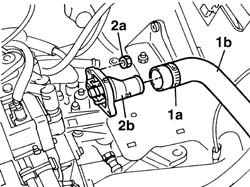
Applies to: all engines; all production periods
Removing
RefittingPlace the car on the ramp.
Disconnect the battery negative terminal.
 | Name | Connector |
|---|---|---|
- | Battery | A1 |
5530B52 Battery DRIP TRAY/SUPPORT - R.R.
1048A32 sleeve from air cleaner to intake manifold - r + r
1048A10 air cleaner filtering element - replace
7055B54 under-engine guard - r r
1. Disconnect the electrical connection from the engine coolant temperature sensor.
| Name | Connector |
|---|---|---|
1 | Coolant temperature sender unit | K45 |
2. Disconnect the coolant supply and return hoses to the radiator from the thermostat.
3. Disconnect the coolant return pipe to the reservoir from the thermostat.
4. Disconnect the coolant supply pipe to the heater from the thermostat.
5. Disconnect the coolant supply hose to the water pump from the thermostat.
6. Undo the bolt (6a) and move the wiring mounting bracket (6b).
7. Undo the nuts (7a) and remove the thermostat (7b), complete with gasket.
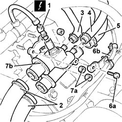
Applies to: all engines; all production periods
Removing
RefittingPlace the car on a ramp.
7055B54 under-engine guard - r r
5530B52 Battery DRIP TRAY/SUPPORT - R.R.
Place a container under the vehicle to collect the engine coolant.
Drain the engine cooling system.
1. Disconnect the electrical connection from the engine temperature sensor.
| Name | Connector |
|---|---|---|
1 | Coolant temperature sender unit | K45 |
2. Disconnect the coolant hoses from the thermostat.
3. Undo the bolts (3a) and remove the bracket (3c) joined to the rigid water pipe.
4. Unscrew the retaining bolts
5. Remove the thermostat from the cylinder head.
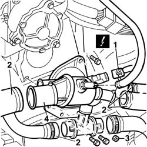
Applies to: all engines; all production periods
Removing
RefittingPosition the vehicle on the ramp.
Proceed with the removal 1044B10 fuel filter assembly - r + r or replace .
Proceed with the removal 5530B10 battery - r+r .
Proceed with the removal 5530B52 Battery DRIP TRAY/SUPPORT - R.R. .
Proceed with the removal 7055B54 under-engine guard - r r .
1. Disconnect the lower coolant inlet hose from the radiator, radiator side.
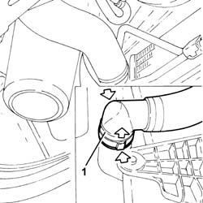
Applies to: all engines; all production periods
Refitting
RemovingFit thermostat assembly into the housing on the cylinder head.
Tighten the bolts securing the thermostat assembly to torque.
 | Fastening | Component | Ø | Value (daNm) |
|---|---|---|---|---|
- | Bolt | THERMOSTAT CONTAINER | M6 | 1 |
Connect the coolant intake pipe and secure it with the appropriate retaining collar.
5530B52 Battery DRIP TRAY/SUPPORT - R.R.
0010T21 coolant check density and top up if necessary
7055B54 under-engine guard - r r
Remove the vehicle from the ramp.
Applies to: all engines; all production periods
Refitting
RemovingCheck the condition of the thermostat.
Thoroughly clean the thermostat and cylinder head mating surfaces.
Change the thermostat gasket.
Fit the thermostat, complete with gasket, and fix it tightening the nuts to the recommended torque.
| Fastening | Component | Ø | Value (daNm) |
|---|---|---|---|---|
- | Nut | THERMOSTAT | M8 | (Cylinder head) 2.5 |
Connect the coolant return hose to the water pump to the thermostat.
Connect the coolant supply pipe to the heater to the thermostat.
Connect the coolant return pipe to the tank to the thermostat.
Connect the coolant supply and return hoses to the radiator to the thermostat.
Connect the electrical connection to the engine coolant temperature sensor.
| Name | Connector |
|---|---|---|
1 | Coolant temperature sender unit | K45 |
1048A10 air cleaner filtering element - replace
1048A32 sleeve from air cleaner to intake manifold - r + r
5530B52 Battery DRIP TRAY/SUPPORT - R.R.
7055B54 under-engine guard - r r
Connect the battery negative terminal.
| Name | Connector |
|---|---|---|
- | Battery | A1 |
Remove the car from the ramps.
Applies to: all engines; all production periods
Refitting
RemovingFit the thermostat in its seat on the cylinder head.
Tighten the fixing bolts to torque.
| Fastening | Component | Ø | Value (daNm) |
|---|---|---|---|---|
- | Bolt | THERMOSTAT CONTAINER | M8 | 2.5 |
Tighten the bolts and the nut securing the bracket to the rigid coolant pipe.
Connect the coolant hoses to the thermostat.
Connect the electrical connection to the engine temperature sensor.
| Name | Connector |
|---|---|---|
- | Coolant temperature sender unit | K45 |
5530B52 Battery DRIP TRAY/SUPPORT - R.R.
0010T21 coolant check density and top up if necessary
7055B54 under-engine guard - r r
Remove the vehicle from the ramp.
Applies to: all engines; all production periods
1. Loosen the band (1a) and disconnect the T connector (1b) from the turbocharger air inlet hose.
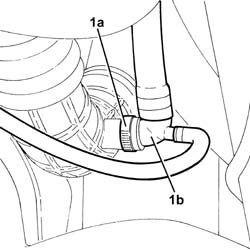
Applies to: all engines; all production periods
1. Loosen the band (1a) and disconnect the turbocharger air inlet hose (1b), turbocharger side.
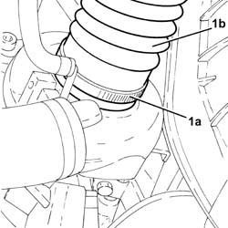
Applies to: all engines; all production periods
1. Disconnect the electrical connection from the air flow meter.
| Name | Connector |
|---|---|---|
1 | Air flow meter | K41 |
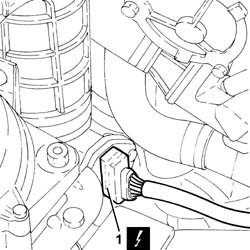
Applies to: all engines; all production periods
1. Loosen the band (1a) and remove the turbocharger air inlet hoses (1b) complete with air flow meter (1c).
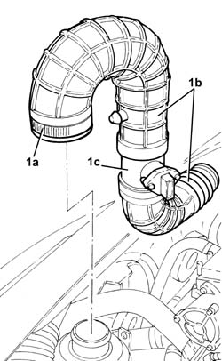
Applies to: all engines; all production periods
1. Undo the bolts (1a) and (1b) and remove the rigid pipe from the E.G.R. solenoid valve to the throttle casing (1c).
2. Remove the gaskets.
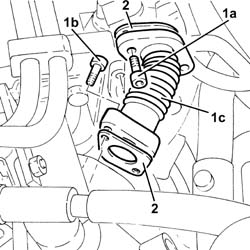
Applies to: all engines; all production periods
1. Disconnect the electrical connection from the E.G.R. valve.
| Name | Connector |
|---|---|---|
1 | EGR solenoid | L30 |
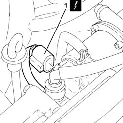
Applies to: all engines; all production periods
1. Undo the bolts (1a) and disconnect the water/exhaust gas heat exchanger for the E.G.R. system (1b) from the E.G.R. solenoid valve.
2. Undo the bolts (2a) and remove the E.G.R. system solenoid valve (2b).
3. Remove the bracket.
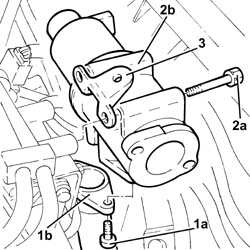
Applies to: all engines; all production periods
1. Release the vacuum pipe from the retaining band.
2. Disconnect the vacuum pipe from the pneumatic valve on the electro-pneumatically controlled throttle body.
3. Loosen the band and disconnect the oil vapour recovery pipe from the tappet cover.
4. Loosen the band fixing the air inlet hose to the electro-pneumatically controlled throttle body.
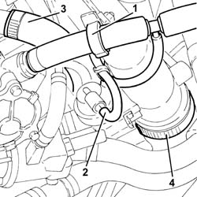
Applies to: all engines; all production periods
1. Undo bolts (1a) and remove the pneumatic throttle body (1b).
2. Remove the gasket.
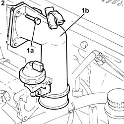
Applies to: all engines; all production periods
1. Disconnect the electrical connection from the turbocharger vane actuator solenoid.
| Name | Connector |
|---|---|---|
1 | Data not available yet |
2. Release the turbocharger vane position actuator solenoid valve from the protection on the gearbox.
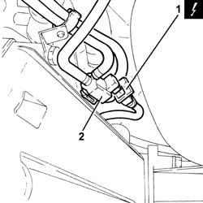
Applies to: all engines; all production periods
1. Undo the bolts fixing the water/exhaust gas heat exchanger for the E.G.R. system to the exhaust manifold.
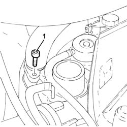
Applies to: all engines; all production periods
1. Disconnect the electrical connection from the engine coolant temperature sensor.
| Name | Connector |
|---|---|---|
1 | Data not available yet |
2. Loosen the band and disconnect the radiator upper coolant inlet hose from the thermostat.
3. Loosen the band and disconnect the outlet pipe from the climate control system heater (3a) from the thermostat T-connector and the delivery pipe to the rigid fluid intake pipe to the coolant pump (3b).
4. Loosen the band and disconnect the coolant supply pipe to the climate control system heater.
5. Loosen the band and disconnect the coolant return pipe to the coolant reservoir from the thermostat.
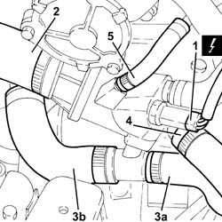
Applies to: all engines; all production periods
1. Loosen the bands and disconnect the coolant intake pipe (1a) and the coolant outlet pipe (1b) from the EGR exhaust gas heat exchanger.
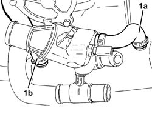
Applies to: all engines; all production periods
1. Disconnect the electrical connections from the injectors and move the wiring aside.
| Name | Connector |
|---|---|---|
1 | Injector | N70 |
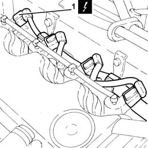
Applies to: all engines; all production periods
1. Tighten the bolts fixing the water/exhaust gas heat exchanger for the E.G.R. system to the cylinder head.
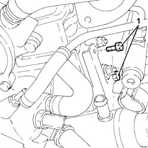
Applies to: all engines; all production periods
1. Undo the nut fixing the water/exhaust gas heat exchanger for the E.G.R. system to the cylinder head.
2. Undo the pin (2a) and the bolt (2b) and remove the thermostat (2c) together with the water/exhaust gas heat exchanger for the E.G.R. system (2d).
3. Remove the thermostat seal.
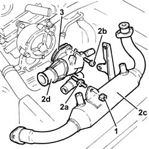
Applies to: all engines; all production periods
Refitting
Removing1. Place the water/exhaust gas heat exchanger for the E.G.R. system (1a) back in its housing together with the thermostat (1b) and the seal (1c).
2. Tighten the pin (2a) and the bolt (2b) fixing the thermostat to the recommended torque.
| Fastening | Component | Ø | Value (daNm) |
|---|---|---|---|---|
2a | Pin | ENGINE THERMOSTAT | M8 | (Cylinder head side) 2.3 ÷ 2.8 |
| Fastening | Component | Ø | Value (daNm) |
|---|---|---|---|---|
2b | Bolt | ENGINE THERMOSTAT | M8 | (Cylinder head side) 2.3 ÷ 2.8 |
3. Tighten the nut securing the EGR water/exhaust gas heat exchanger to the cylinder head.
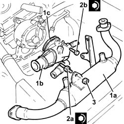
Applies to: all engines; all production periods
Tighten the bolts fixing the water/exhaust gas heat exchanger for the E.G.R. system to the cylinder head.
Place the electrical wiring back in its housing and connect the electrical connections to the injectors.
Connect the engine coolant inlet pipe and the engine coolant outlet pipe to the E.G.R. exhaust gas heat exchanger, then tighten the bands.
Connect the coolant return pipe to the coolant reservoir to the thermostat and tighten the band.
Connect the coolant supply pipe to the climate control system heater to the thermostat and tighten the band.
Connect the outlet pipe from the climate control system heater and the delivery pipe to the rigid inlet pipe to the coolant pump from the thermostat T-connector, then tighten the bands.
Connect the upper coolant inlet hose to the radiator to the thermostat and tighten the band.
Connect the electrical connection to the engine coolant temperature sensor.
Tighten the bolts fixing the water/exhaust gas heat exchanger for the E.G.R. system to the exhaust manifold.
Fasten the turbocharger vane position actuator solenoid valve to the protection on the gearbox.
Connect the electrical connection to the turbocharger vane actuator solenoid.
1. Replace the pneumatically-controlled throttle casing (1a), complete with gasket (1b), back in its housing and fix it tightening the bolts to the recommended torque.
| Fastening | Component | Ø | Value (daNm) |
|---|---|---|---|---|
1c | - | - | - | - |
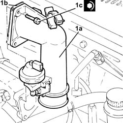
Applies to: all engines; all production periods
Tighten the band securing the air inlet hose to the electro-pneumatically controlled throttle body.
Connect the oil vapour recovery pipe to the tappet cover and secure with a band.
Connect the vacuum pipe to the pneumatic valve on the electro-pneumatically controlled throttle body.
Fix the vacuum pipe to the securing band.
Refit the E.G.R. system solenoid with bracket and tighten it using the bolts.
Connect the water/exhaust gas heat exchanger for the E.G.R. system to the E.G.R. solenoid valve and tighten the bolts.
Connect the electrical connection to the E.G.R. valve.
Refit the rigid pipe from EGR solenoid to throttle body in its housing complete with gasket and fix it with the bolts.
Place the turbocharger air inlet hoses back in their housings complete with air flow meter and tighten the band.
Connect the electrical connection to the air flow meter.
Connect the turbocharger air inlet hose, turbocharger side and tighten the band.
Connect the T connector to the turbocharger air inlet hose and tighten the band.
Connect the lower coolant outlet hose to the radiator.
Proceed with the refitting 7055B54 under-engine guard - r r .
Proceed with the refitting 5530B52 Battery DRIP TRAY/SUPPORT - R.R. .
Proceed with the refitting 5530B10 battery - r+r .
Proceed with the refitting 1044B10 fuel filter assembly - r + r or replace .
Refill the engine cooling system with coolant 0010T20 coolant change .
Remove the car from the ramp.
Topics linked from this page (8)
- 0010T20 coolant change
- 0010T21 coolant check density and top up if necessary
- 1044B10 fuel filter assembly - r + r or replace
- 1048A10 air cleaner filtering element - replace
- 1048A32 sleeve from air cleaner to intake manifold - r + r
- 5530B10 battery - r+r
- 5530B52 Battery DRIP TRAY/SUPPORT - R.R.
- 7055B54 under-engine guard - r r